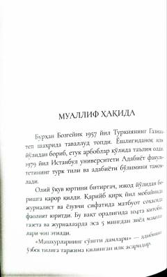

MSMashhur shaxslar va payg'ambarlarning vafoti oldidan kechgan ibratli damlari haqida.
Ushbu kitobda tarixda o'tgan mashhur shaxslar, payg'ambarlar va avliyolarning hayotining so'nggi daqiqalari hamda vafoti oldidan yuz bergan voqealar bayon etiladi. Muallif Burhan Bozgeyik insoniyatni o'lim haqida fikr yuritishga va hayotning mazmunini anglashga chorlaydi.